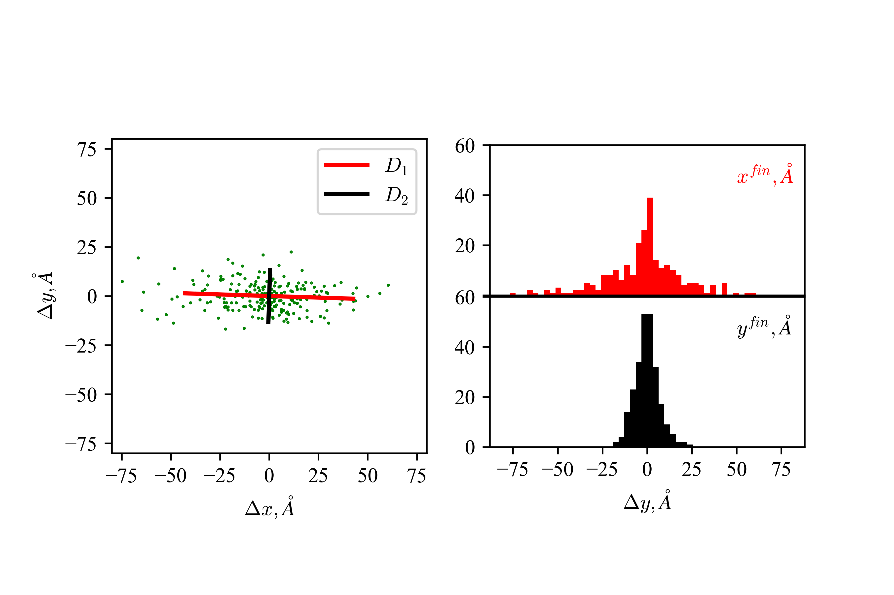

7. Работа с графиками¶
7.1. Matplotlib¶
Matplotlib - продвинутая библиотека для создания визуализации в Python. Оффициальный сайт библиотеки содержит огромное количество хорошо описанных примеров использования. Сама библиотека является полностью объектно-ориентированной, и для полноценной работы с ней нужно более продвинутое знание Python, чем предпологает данный курс.
Как и NumPy, matplotlib не входит в стандартный набор библиотек Python, и требует отдельной установки в случае отсутствия в дистрибутиве (в Anaconda данная библиотека установленна по умолчанию).
Для простой работы с библиотекой, авторами реализован модуль с коллекцией функций matplotlib.pyplot, который позволяет реализовать большую часть базовых потребностей для визуализации данных.
Расмотриим простейший пример использования:
import numpy as np
import matplotlib.pyplot as plt
#готовим данные
X = np.linspace(0, 4*np.pi, 100)
Y = np.sin(X)
plt.plot(X, Y) # добавляем график
plt.show() # строим график
Для построения нескольких кривых на одном графике достаточно несколько раз вызвать функию plot:
plt.plot(X, np.sin(X))
plt.plot(X, np.cos(X))
plt.show()
7.2. Свойства линии и точки¶
В matplotlib есть продвинутый способ задавать базовые свойства линии и точки. Для простых же построений достаточно передать в функцию plot() аргумент в виде строки с ключевыми символами ‘цвет маркер линия’. Полную таблицу символов и стилей можно найти в разделе Notes описания функции plot.
По умолчанию визуализация происходит линиями.
Рассмотрим несколько примеров:
X = np.linspace(-5, 5, 10)
plt.plot(X,0*X, '-') # линия
plt.plot(X,1*X, '--', linewidth=8) # пунктир потолще
plt.plot(X,2*X, 'r:') #красные точки
plt.show()
plt.plot(X,0*X, 'b.') #синие точки
plt.plot(X,1*X, 'go') #зеленые кружки
plt.plot(X,2*X, 's', color='#ff0000') #красные квадаты (rgb цвет в hex)
plt.plot(X,3*X, 'k^', markersize=20 ) #большие черные треугольники
plt.show()
Как вы могли увидеть, для контроля параметров линии можно явно задавать значения некоторых ее параметров в plt.plot(). Наиболее часто используемые параметры:
linestyle или ls - стиль линии (сплошная, пунктир, точки и т.д.)
linewidth или lw - толщина линии
color - цвет линии
marker - символ, используемый для изображения заданных в plot() точек
markersize - размер этих точек
7.2.1. Итерационная задача цветов¶
Иногда бывает удобно чтобы цвета были унокальными и соответствовали каким-то конкретным значениям. Для этого аргумент color можно задавать в цикле, из colormap. Рассмотрим вариант решения подобной задачи.
import matplotlib.cm as cm
x=np.linspace(-2,2,31)
for n in np.arange(0,1.05,0.05):
y=-(1+n)*x**2+10*n
plt.plot(x,y, color=cm.jet(n))
plt.colorbar(cm.ScalarMappable(cmap='jet'),
boundaries=np.linspace(0,100,101), #границы для отображения в colorbar
ticks=range(0,101,25)) #метки в colorbar
plt.show()
7.3. Оформление¶
7.3.1. matplotlib rcParams¶
В matplotlib можно настроить положение отдельных элементов, отступы, шрифты и многое другое. Параметры всего этого задаются в matplotlib rcParams. Для многих эленетов существуют более удобные подходы, реализованные отдельными функциями.
Во всех текстовых полях в matplotlib можно использовать
\(\LaTeX\) для отображения специальных символов и формул.
7.3.2. Легенда¶
Для отображения легенды проще всего использовать аргумент label и
функцию plt.legend.
x = np.linspace(0, 10, 100)
y1 = 3*np.exp(-x)
y2 = x**0.5
y3 = x*3/10
plt.plot(x,y1, label='$y =3 e^{-x}$')
plt.plot(x,y2, label='$y=\sqrt{x}$')
plt.plot(x,y3, label=r'$y =\frac{3}{10} x$')
plt.legend(bbox_to_anchor=(0, 1, 1, 0.1),
mode="expand", ncol=3,
shadow='True',
fontsize=15,)
plt.show()
7.3.3. Заголовки и подписи¶
Для того, чтобы оставить заголовок, используется функция
plt.title(label, fontdict=None, loc='center', pad=None, **kwargs).
Добавим к вышеописанному графику заголовок:
x = np.linspace(0, 10, 100)
y1 = 3*np.exp(-x)
y2 = x**0.5
y3 = x*3/10
plt.plot(x,y1, label='$y =3 e^{-x}$')
plt.plot(x,y2, label='$y=\sqrt{x}$')
plt.plot(x,y3, label=r'$y =\frac{3}{10} x$')
plt.legend(bbox_to_anchor=(0.7, 0.15, 0.3, 0.3),
shadow='True',)
plt.title('Бесползензный график', fontdict={'fontsize': 15})
plt.show()
Для добавления на график текста можно использовать
plt.text(x, y, text). Также может быть полезно использовать
plt.annotate(text, xy, *args, **kwargs). Для добавления подписей к
осям используется xlabel(text) и ylabel(text)
x = np.linspace(0, 10, 100)
y1 = 3*np.exp(-x)
y2 = x**0.5
y3 = x*3/10
plt.plot(x,y1, label='$y = 3e^{-x}$')
plt.plot(x,y2, label='$y=\sqrt{x}$')
plt.plot(x,y3, label=r'$y =\frac{3}{10} x$')
plt.legend(bbox_to_anchor=(0.7, 0.15, 0.3, 0.3), shadow='True',)
plt.title('Бесползензный график', fontdict={'fontsize': 15})
plt.text(2,2.5,r'$e^x = \sum_{k=0}^\infty \frac{x_k}{k!}$', fontdict={'fontsize': 17})
plt.xlabel('$x$, отн. ед')
plt.ylabel('$y$, отн. ед')
plt.show()
Если вам не нравятся шрифты или что-то еще в оформлении, вы можете
изменить это в параметрах rcParams
from matplotlib import rcParams
rcParams['font.family'] = 'serif'
rcParams['font.serif'] = ['Times New Roman']
rcParams["figure.dpi"]=600 #Улучшаем качество
rcParams['mathtext.fontset'] = 'cm'
x = np.linspace(0, 10, 100)
y1 = 3*np.exp(-x)
y2 = x**0.5
y3 = x*3/10
plt.plot(x,y1, label='$y = 3e^{-x}$')
plt.plot(x,y2, label='$y=\sqrt{x}$')
plt.plot(x,y3, label=r'$y =\frac{3}{10} x$')
plt.legend(bbox_to_anchor=(0.7, 0.15, 0.3, 0.3), shadow='True',)
plt.title('Бесползензный график', fontdict={'fontsize': 15})
plt.text(2,2.5,r'$e^x = \sum_{k=0}^\infty \frac{x_k}{k!}$', fontdict={'fontsize': 17})
plt.xlabel('$x$, отн. ед')
plt.ylabel('$y$, отн. ед')
plt.show()
7.4. Несколько графиков на картинке, matplotlib.axes¶
Как говорилось ранее, для более продвинутой работы с графиками иногда
приходится использовать более сложные инструменты, одним из которых
является класс matplotlib.axes описание класса. Непосредственная
работа с данным классом позволяет настроить большее количество
параметров каждого отдельного графика.
Рассмотрим пример. Если мы просто три раза вызовем plot(), то мы построим три кривых на одном графике:
rcParams["figure.dpi"]=100 #Улучшаем качество
x = np.linspace(0, 10, 100)
y1 = 3*np.exp(-x)
y2 = x**0.5
y3 = x*3/10
plt.plot(x,y1)
plt.plot(x,y2)
plt.plot(x,y3)
plt.show()
Иногда же мы хотим построить несколько разных графиков на одном
изображении. Для этого удобно использовать
matplotlib.pyplot.subplot(*args), где *args формата
(nrows, ncols, index), или int того же формата (ограничения:
каждая цифра не больше 9). Нумерация начинается с 1. При вызове,
данная функция возвращает объект из подкласа matplotlib.axes.
Вызов этой функции создает изображение, которое можно представить в виде таблицы (nrows x ncols). При этом мы обращаемся к конкретной ячейке этой таблицы index и строим в ней график.
Рассмотрим ее использование:
ax1=plt.subplot(1,3,1) # одна строка, три колонки, график №1
ax1.plot(x,y1)
ax2=plt.subplot(1,3,2) # одна строка, три колонки, график №2
ax2.plot(x,y2)
ax3=plt.subplot(1,3,3) # одна строка, три колонки, график №3
ax3.plot(x,y3)
plt.subplots_adjust(wspace=0.5) #увеличиваем разделение между графиками
plt.show()
Другой подход - генерировать список графиков, а потом их по отдельности
заполнять (удобно при общей легенде или других общих параметрах),
используя функцию plt.subplots().
Сам рисунок, который мы видим, или холст, на котором происходит
отрисовка, является объектом класса figure. Контролировать свойства
этого холста можно, обращаясь именно к этому объекту. Каждый отдельный
график является объектом класса axes (координатные оси с кривыми).
Работа с свойствами отдельных графиков происходит путем обращения к этим
объектам. plt.subplots() создает объект figure и список
объектов-графиков, расположенных на нем. Расположение графиков снова
задается параметрами nrows и ncols, размер самого рисунка -
параметром figsize
figsize : (float, float), optional, width, height in inches. If not
provided, defaults to rcParams["figure.figsize"] = [6.4, 4.8].
fig, (ax1, ax2, ax3) = plt.subplots(nrows=3, ncols=1, figsize=(4, 10))
ax1.plot(x,y1)
ax2.plot(x,y2)
ax3.plot(x,y3)
fig.tight_layout(pad=3.0) #добавляем отступы
plt.show()
Более сложный случай:
ax1=plt.subplot(2,2,1) # две строки, две колонки, график №1
ax1.plot(x,y1)
ax2=plt.subplot(2,2,2) # две строки, две колонки, график №2
ax2.plot(x,y2)
ax3=plt.subplot(2,1,2) # две строки, одна колонка, график №2!
ax3.plot(x,y3)
plt.subplots_adjust(hspace=0.5) #увеличиваем горизонтальное разделение между графиками
plt.show()
7.5. Масштаб и оси¶
7.5.1. Пределы отображения и масштабирование¶
Для изменения пределов, в которых отображается график, используются
функции plt.xlim(нижн, верхн), plt.ylim(нижн, верхн)
x = np.arange(-2, 2, 0.5)
y = np.exp(x)
plt.plot(x,y,'s-')
plt.show()
Изменим пределы отображения:
plt.plot(x,y,'s-')
plt.xlim(-2.1,0.1)
plt.ylim(0, 1.1)
plt.show()
Меняем пропорции с set_aspect(aspect_ratio), где aspect_ratio -
отношение длин единичного отрезка по \(Y\) к единичному отрезку по
\(X\)
plt.plot(x,y,'s-')
ax=plt.gca() # Get the current axes
ax.set_aspect(2.0)
plt.xlim(-2.1,0.1)
plt.ylim(0, 1.1)
plt.show()
7.5.2. Оси и сетка¶
Для настройки осей используется класс matplotlib.spines
x = np.linspace(-np.pi,np.pi,100)
y = np.sin(x)
plt.plot(x,y)
plt.show()
Переместим оси в центр
plt.plot(x,y)
ax = plt.gca()
ax.spines['left'].set_position('center')
ax.spines['bottom'].set_position('center')
ax.spines['right'].set_visible(False)
ax.spines['top'].set_visible(False)
plt.show()
Или можно настроить координаты пересечения вручную
plt.plot(x,y)
ax = plt.gca()
ax.spines['left'].set_position('center')
ax.spines['bottom'].set_position(('axes', 0)) # 0 - у нижней части оси, 1 - у верхней
ax.spines['right'].set_visible(False)
ax.spines['top'].set_visible(False)
plt.show()
Для выставления шага делений осей и вида подписей данных можно
использовать plt.yticks() и plt.xticks().
plt.plot(x,y)
plt.yticks([-1, -0.5, 0, 0.5, 1],
labels=['минус один', 'минус ноль.пять', 'ноль', 'ноль.пять','один'],
rotation='30')
plt.show()
Добавим сетку функцией
plt.grid(b=None, which='major', axis='both', **kwargs)
b : bool or None
which : {'major', 'minor', 'both'}, optional The grid lines to
apply the changes on.
axis : {'both', 'x', 'y'}, optional The axis to apply the
changes on.
****kwargs** : Line2D properties
plt.plot(x,y)
plt.yticks([-1, -0.5, 0, 0.5, 1],
labels=['минус один', 'минус ноль.пять', 'ноль', 'ноль.пять','один'],
rotation='30')
plt.grid()
plt.show()
7.5.3. Двойные оси.¶
Рассмотрим ситуацию необходимости построения двух кривых в разных координатах на одном графике. Рассмотрим две кривые, одна из них которых меняется по закону \(y_1 = 4\tanh[x - 10] + 0.5 x\) и вторую \(y_2 = 20 x +200\). Часто, построение нескольких кривых на одном графике черевато потерей деталей, или даже не имеет никакого физического смысла:
x = np.linspace(0,20,500)
y1 = 4*np.tanh(x-10)+ 0.5*x
y2 = 20*x+200
plt.plot(x,y1, label=r'$y_1 = 4\tanh[x - 10] + 0.5 x$')
plt.plot(x,y2, label=r'$y_2 = 20 x +200$')
plt.legend()
<matplotlib.legend.Legend at 0x7f77e523a550>
В таком случае удобно использовать метод twinx(), twiny() класса
axes.
# генерируем данные
x = np.linspace(0,20,500)
y1 = 4*np.tanh(x-10)+ 0.5*x
y2 = 20*x+200
p1 = plt.plot(x,y1,'b-', label=r'$y_1 = 4\tanh[x - 10] + 0.5 x$')
plt.xlabel(u'это $x$')
plt.ylabel(r'$y_1$, a.u.$_1$', color='blue')
ax1=plt.gca()
ax1.tick_params(axis='y',labelcolor='blue')
#инициируем второй график с общей осью x
ax2=ax1.twinx()
p2 = ax2.plot(x,y2, 'r:', label=r'$y_2 = 20 x +200$')
ax2.set_ylim(100,700)
ax2.set_ylabel(r'$y_2$, a.u.$_2$',color='red')
ax2.tick_params(axis='y',labelcolor='red')
# работаем с легендой
h1, l1 = ax1.get_legend_handles_labels()
h2, l2 = ax2.get_legend_handles_labels()
plt.legend(handles = h1+h2,labels=l1+l2)
plt.show()
7.5.4. Общая ось для двух соседних графиков¶
В случае необходимости сделать общую ось для нескольких графиков,
функции plt.subplots и plt.subplot имеют аргументы sharex и
sharey (Обратите внимание, они работают по-разному)
t = np.arange(0.0, 2.0, 0.01)
s1 = np.sin(2 * np.pi * t)
s2 = np.exp(-t)
s3 = s1 * s2
fig, axs = plt.subplots(3, 1, sharex=True)
# Remove horizontal space between axes
fig.subplots_adjust(hspace=0)
# Plot each graph, and manually set the y tick values
axs[0].plot(t, s1)
axs[0].set_yticks(np.arange(-0.9, 1.0, 0.4))
axs[0].set_ylim(-1, 1)
axs[1].plot(t, s2)
axs[1].set_yticks(np.arange(0.1, 1.0, 0.2))
axs[1].set_ylim(0, 1)
axs[2].plot(t, s3)
axs[2].set_yticks(np.arange(-0.9, 1.0, 0.4))
axs[2].set_ylim(-1, 1)
plt.show()
7.6. Гистограммы¶
Для построения гистограмм используется функция plt.hist
x=np.random.randn(10000)
plt.hist(x, 100)
plt.show()
7.7. 2D графики¶
Функция pyplot.imshow позволяет попиксельно отобразить данные
массива.
Рассмотрим форму массива:
x = y = np.linspace(-2.0, 2.0, 11)
X, Y = np.meshgrid(x, y)
Z = X*Y
print(X, end='\n\n')
print(Y, end='\n\n')
print(Z)
[[-2. -1.6 -1.2 -0.8 -0.4 0. 0.4 0.8 1.2 1.6 2. ]
[-2. -1.6 -1.2 -0.8 -0.4 0. 0.4 0.8 1.2 1.6 2. ]
[-2. -1.6 -1.2 -0.8 -0.4 0. 0.4 0.8 1.2 1.6 2. ]
[-2. -1.6 -1.2 -0.8 -0.4 0. 0.4 0.8 1.2 1.6 2. ]
[-2. -1.6 -1.2 -0.8 -0.4 0. 0.4 0.8 1.2 1.6 2. ]
[-2. -1.6 -1.2 -0.8 -0.4 0. 0.4 0.8 1.2 1.6 2. ]
[-2. -1.6 -1.2 -0.8 -0.4 0. 0.4 0.8 1.2 1.6 2. ]
[-2. -1.6 -1.2 -0.8 -0.4 0. 0.4 0.8 1.2 1.6 2. ]
[-2. -1.6 -1.2 -0.8 -0.4 0. 0.4 0.8 1.2 1.6 2. ]
[-2. -1.6 -1.2 -0.8 -0.4 0. 0.4 0.8 1.2 1.6 2. ]
[-2. -1.6 -1.2 -0.8 -0.4 0. 0.4 0.8 1.2 1.6 2. ]]
[[-2. -2. -2. -2. -2. -2. -2. -2. -2. -2. -2. ]
[-1.6 -1.6 -1.6 -1.6 -1.6 -1.6 -1.6 -1.6 -1.6 -1.6 -1.6]
[-1.2 -1.2 -1.2 -1.2 -1.2 -1.2 -1.2 -1.2 -1.2 -1.2 -1.2]
[-0.8 -0.8 -0.8 -0.8 -0.8 -0.8 -0.8 -0.8 -0.8 -0.8 -0.8]
[-0.4 -0.4 -0.4 -0.4 -0.4 -0.4 -0.4 -0.4 -0.4 -0.4 -0.4]
[ 0. 0. 0. 0. 0. 0. 0. 0. 0. 0. 0. ]
[ 0.4 0.4 0.4 0.4 0.4 0.4 0.4 0.4 0.4 0.4 0.4]
[ 0.8 0.8 0.8 0.8 0.8 0.8 0.8 0.8 0.8 0.8 0.8]
[ 1.2 1.2 1.2 1.2 1.2 1.2 1.2 1.2 1.2 1.2 1.2]
[ 1.6 1.6 1.6 1.6 1.6 1.6 1.6 1.6 1.6 1.6 1.6]
[ 2. 2. 2. 2. 2. 2. 2. 2. 2. 2. 2. ]]
[[ 4. 3.2 2.4 1.6 0.8 -0. -0.8 -1.6 -2.4 -3.2 -4. ]
[ 3.2 2.56 1.92 1.28 0.64 -0. -0.64 -1.28 -1.92 -2.56 -3.2 ]
[ 2.4 1.92 1.44 0.96 0.48 -0. -0.48 -0.96 -1.44 -1.92 -2.4 ]
[ 1.6 1.28 0.96 0.64 0.32 -0. -0.32 -0.64 -0.96 -1.28 -1.6 ]
[ 0.8 0.64 0.48 0.32 0.16 -0. -0.16 -0.32 -0.48 -0.64 -0.8 ]
[-0. -0. -0. -0. -0. 0. 0. 0. 0. 0. 0. ]
[-0.8 -0.64 -0.48 -0.32 -0.16 0. 0.16 0.32 0.48 0.64 0.8 ]
[-1.6 -1.28 -0.96 -0.64 -0.32 0. 0.32 0.64 0.96 1.28 1.6 ]
[-2.4 -1.92 -1.44 -0.96 -0.48 0. 0.48 0.96 1.44 1.92 2.4 ]
[-3.2 -2.56 -1.92 -1.28 -0.64 0. 0.64 1.28 1.92 2.56 3.2 ]
[-4. -3.2 -2.4 -1.6 -0.8 0. 0.8 1.6 2.4 3.2 4. ]]
plt.imshow принимает (M, N) массив (и не только), где каждому m,n
отображается цветом задаваемым cmap.
import matplotlib.cm as cm #colormaps
x = y = np.linspace(-4, 4, 1001)
X, Y = np.meshgrid(x, y)
Z = np.sin(X*Y)
fig, ax = plt.subplots()
im = ax.imshow(Z, # массив данных
extent=[-1, 1, -1, 1], # пределы по осям
#interpolation='bilinear', # "сглаживание"
cmap=cm.jet,
)
cbar=fig.colorbar(im,ax=ax)
cbar.ax.set_ylabel('циферки', fontdict={'fontsize': 15})
plt.show()
Для сохраниения графика используйте plt.savefig('filename')
7.8. Задачи¶
Постройте график как в разделе Итерационная задача цветов базируясь на данных задачи 5.4.
Постройте графическую визуализацию задачи №6.4, как представленно ниже. Направление черной и краной линии - собственные вектора матрицы ковариации, их длина - \(4\sqrt{w}\), где \(w\) - соответствующее собственное знвчение. Результат сохраните в формате
.pdf.Где-то в интернете есть красивая картинка.
Постройте схожую картинку только для n=1 и 2, (1s, 2s и 2p орбитали, соответственно). Посторайтесь подобрать близкую цветовую схему. Если забыли функции, то они есть тут.